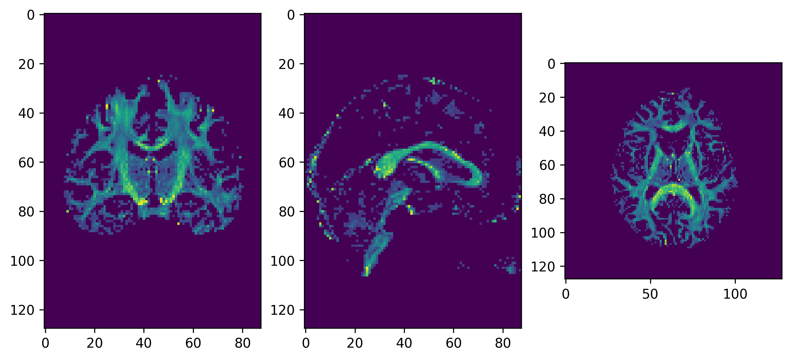
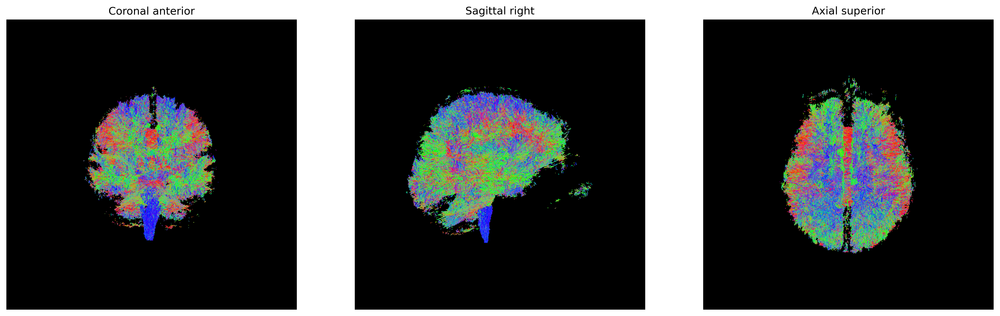
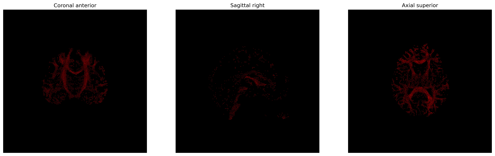

Probabilistic tractography
Last updated on 2024-02-18 | Edit this page
Overview
Questions
- Why do we need tractography algorithms beyond the deterministic ones?
- How is probabilistic tractography different from deterministic tractography?
Objectives
- Understand the principles behind a probabilistic tractography algorithm
- Understand the aspects involved when analyzing the tractogram computed using a probabilistic algorithm
Probabilistic tractography
Probabilistic fiber tracking is a way of reconstructing the white matter structural connectivity using diffusion MRI data. Much like deterministic fiber tracking, the probabilistic approach follows the trajectory of a possible pathway in a step-wise fashion and propagate streamlines based on the local orientations reconstructed at each voxel.
In probabilistic tracking, however, the tracking direction at each point along the path is chosen at random from a distribution of possible directions, and thus is no longer deterministic. The distribution at each point is different and depends on the observed diffusion data at that point. The distribution of tracking directions at each point can be represented as a probability mass function (PMF) if the possible tracking directions are restricted to a set of points distributed on a sphere.
Like their deterministic counterparts, probabilistic tracking methods start propagating streamlines from a seed map, which contains a number of coordinates per voxel to initiate the procedure. The higher the number of seeds per voxel (i.e. the seed density), the larger the number of potentially recovered long-range connections. However, this comes at the cost of a longer running time.
This episode builds on top of the results of the CSD local orientation reconstruction method presented in a previous episode.
We will first get the necessary diffusion data, and compute the local orientation information using the CSD method:
PYTHON
import os
import nibabel as nib
import numpy as np
from bids.layout import BIDSLayout
from dipy.core.gradients import gradient_table
from dipy.io.gradients import read_bvals_bvecs
dwi_layout = BIDSLayout('../../data/ds000221/derivatives/uncorrected_topup_eddy/', validate=False)
gradient_layout = BIDSLayout('../../data/ds000221/', validate=False)
subj = '010006'
dwi_fname = dwi_layout.get(subject=subj, suffix='dwi', extension='.nii.gz', return_type='file')[0]
bvec_fname = dwi_layout.get(subject=subj, extension='.eddy_rotated_bvecs', return_type='file')[0]
bval_fname = gradient_layout.get(subject=subj, suffix='dwi', extension='.bval', return_type='file')[0]
dwi_img = nib.load(dwi)
affine = dwi_img.affine
gt_bvals, gt_bvecs = read_bvals_bvecs(bval, bvec)
gtab = gradient_table(gt_bvals, gt_bvecs)We will now create the seeding mask and the seeds using an estimate of the white matter tissue based on the FA values obtained from the diffusion tensor:
PYTHON
from dipy.reconst import dti
from dipy.segment.mask import median_otsu
from dipy.tracking import utils
dwi_data = dwi_img.get_fdata()
dwi_data, dwi_mask = median_otsu(dwi_data, vol_idx=[0], numpass=1) # Specify the volume index to the b0 volumes
dti_model = dti.TensorModel(gtab)
dti_fit = dti_model.fit(dwi_data, mask=dwi_mask) # This step may take a while
# Create the seeding mask
fa_img = dti_fit.fa
seed_mask = fa_img.copy()
seed_mask[seed_mask >= 0.2] = 1
seed_mask[seed_mask < 0.2] = 0
# Create the seeds
seeds = utils.seeds_from_mask(seed_mask, affine=affine, density=1)We will now estimate the FRF and set the CSD model to feed the local orientation information to the streamline propagation object:
PYTHON
from dipy.reconst.csdeconv import (ConstrainedSphericalDeconvModel,
auto_response_ssst)
response, ratio = auto_response_ssst(gtab, dwi_data, roi_radii=10, fa_thr=0.7)
sh_order = 2
csd_model = ConstrainedSphericalDeconvModel(gtab, response, sh_order=sh_order)
csd_fit = csd_model.fit(dwi_data, mask=seed_mask)Tracking methods are provided with a criterion to stop propagating streamlines beyond non-white matter tissues. One way to do this is to use the Generalized Fractional Anisotropy (GFA). Much like the Fractional Anisotropy issued by the DTI model measures anisotropy, the GFA uses samples of the ODF to quantify the anisotropy of tissues, and hence, it provides an estimation of the underlying tissue type.
PYTHON
from scipy import ndimage # To rotate image for visualization purposes
import matplotlib.pyplot as plt
from dipy.reconst.shm import CsaOdfModel
from dipy.tracking.stopping_criterion import ThresholdStoppingCriterion
csa_model = CsaOdfModel(gtab, sh_order=sh_order)
gfa = csa_model.fit(dwi_data, mask=seed_mask).gfa
stopping_criterion = ThresholdStoppingCriterion(gfa, .2)
# Create the directory to save the results
out_dir = '../../data/ds000221/derivatives/dwi/tractography/sub-%s/ses-01/dwi/' % subj
if not os.path.exists(out_dir):
os.makedirs(out_dir)
# Save the GFA
gfa_img = nib.Nifti1Image(gfa.astype(np.float32), affine)
nib.save(gfa_img, os.path.join(out_dir, 'gfa.nii.gz'))
# Plot the GFA
%matplotlib inline
fig, ax = plt.subplots(1, 3, figsize=(10, 10))
ax[0].imshow(ndimage.rotate(gfa[:, gfa.shape[1]//2, :], 90, reshape=False))
ax[1].imshow(ndimage.rotate(gfa[gfa.shape[0]//2, :, :], 90, reshape=False))
ax[2].imshow(ndimage.rotate(gfa[:, :, gfa.shape[-1]//2], 90, reshape=False))
fig.savefig(os.path.join(out_dir, "gfa.png"), dpi=300, bbox_inches="tight")
plt.show()The GFA threshold stopping criterion value must be adjusted to the data in order to avoid creating a mask that will exclude white matter areas (which would result in streamlines being unable to propagate to other white matter areas). Visually inspecting the GFA map might provide with a sufficient guarantee about the goodness of the value.

GFA
The Fiber Orientation Distribution (FOD) of the CSD model estimates
the distribution of small fiber bundles within each voxel. We can use
this distribution for probabilistic fiber tracking. One way to do this
is to represent the FOD using a discrete sphere. This discrete FOD can
be used by the ProbabilisticDirectionGetter as a PMF for
sampling tracking directions. We need to clip the FOD to use it as a PMF
because the latter cannot have negative values. Ideally, the FOD should
be strictly positive, but because of noise and/or model failures
sometimes it can have negative values.
The set of possible directions to choose to propagate a streamline is
restricted by a cone angle \(\theta\),
named max_angle in DIPY’s
ProbabilisticDirectionGetter::from_pmf method.
Another relevant parameter of the propagation is the step size, which dictates how much the propagation will advance to the next point. Note that it is a real number, since the tracking procedure operates in physical coordinates.
Note that the LocalTracking class accepts a
StoppingCriterion class instance as its second argument,
and thus a different criterion can be used if the GFA criterion does not
fit into our framework, or if different data is available in our
workflow.
PYTHON
from dipy.direction import ProbabilisticDirectionGetter
from dipy.data import small_sphere
from dipy.io.stateful_tractogram import Space, StatefulTractogram
from dipy.io.streamline import save_tractogram
from dipy.tracking.local_tracking import LocalTracking
from dipy.tracking.streamline import Streamlines
fod = csd_fit.odf(small_sphere)
pmf = fod.clip(min=0)
prob_dg = ProbabilisticDirectionGetter.from_pmf(pmf, max_angle=30.,
sphere=small_sphere)
streamline_generator = LocalTracking(prob_dg, stopping_criterion, seeds,
affine, step_size=.5)
streamlines = Streamlines(streamline_generator)
sft = StatefulTractogram(streamlines, dwi_img, Space.RASMM)
# Save the tractogram
save_tractogram(sft, "tractogram_probabilistic_dg_pmf.trk")We will easily generate the anatomical views on the generated
tractogram using the generate_anatomical_volume_figure
helper function:
PYTHON
from fury import actor, colormap
from utils.visualization_utils import generate_anatomical_volume_figure
# Plot the tractogram
# Build the representation of the data
streamlines_actor = actor.line(streamlines, colormap.line_colors(streamlines))
# Generate the figure
fig = generate_anatomical_volume_figure(streamlines_actor)
fig.savefig(os.path.join(out_dir, "tractogram_probabilistic_dg_pmf.png"),
dpi=300, bbox_inches="tight")
plt.show()
Streamlines representing white matter using probabilistic direction
getter from PMF
One disadvantage of using a discrete PMF to represent possible
tracking directions is that it tends to take up a lot of RAM memory. The
size of the PMF, the FOD in this case, must be equal to the number of
possible tracking directions on the hemisphere, and every voxel has a
unique PMF. In this case the data is (81, 106, 76) and
small_sphere has 181 directions so the FOD is
(81, 106, 76, 181). One way to avoid sampling the PMF and
holding it in memory is to build the direction getter directly from the
spherical harmonic (SH) representation of the FOD. By using this
approach, we can also use a larger sphere, like
default_sphere which has 362 directions on the hemisphere,
without having to worry about memory limitations.
PYTHON
from dipy.data import default_sphere
prob_dg = ProbabilisticDirectionGetter.from_shcoeff(csd_fit.shm_coeff,
max_angle=30.,
sphere=default_sphere)
streamline_generator = LocalTracking(prob_dg, stopping_criterion, seeds,
affine, step_size=.5)
streamlines = Streamlines(streamline_generator)
sft = StatefulTractogram(streamlines, dwi_img, Space.RASMM)
# Save the tractogram
save_tractogram(sft, "tractogram_probabilistic_dg_sh.trk")We will visualize the tractogram using the three usual anatomical views:
PYTHON
# Plot the tractogram
# Build the representation of the data
streamlines_actor = actor.line(streamlines, colormap.line_colors(streamlines))
# Generate the figure
fig = generate_anatomical_volume_figure(streamlines_actor)
fig.savefig(os.path.join(out_dir, "tractogram_probabilistic_dg_sh.png"),
dpi=300, bbox_inches="tight")
plt.show()
Streamlines representing white matter using probabilistic direction
getter from SH
Not all model fits have the shm_coeff attribute because
not all models use this basis to represent the data internally. However
we can fit the ODF of any model to the spherical harmonic basis using
the peaks_from_model function.
PYTHON
from dipy.direction import peaks_from_model
peaks = peaks_from_model(csd_model, dwi_data, default_sphere, .5, 25,
mask=seed_mask, return_sh=True, parallel=True)It is always good practice to (save and) visualize the peaks as a check towards ensuring that the orientation information conforms to what is expected as input to the tracking process.
PYTHON
# Save the peaks
nib.save(nib.Nifti1Image(reshape_peaks_for_visualization(peaks),
affine), os.path.join(out_dir, 'peaks.nii.gz'))As usual, we will use FURY to visualize the peaks:
PYTHON
from utils.visualization_utils import generate_anatomical_slice_figure
# Visualize the peaks
# Build the representation of the data
peaks_actor = actor.peak_slicer(peaks.peak_dirs, peaks.peak_values)
# Compute the slices to be shown
slices = tuple(elem // 2 for elem in dwi_data.shape[:-1])
# Generate the figure
fig = generate_anatomical_slice_figure(slices, peaks_actor)
fig.savefig(os.path.join(out_dir, "peaks.png"), dpi=300, bbox_inches="tight")
plt.show()
Peaks obtained from the CSD model for tracking purposes
We will now perform the tracking process using the local orientation information provided by the peaks:
PYTHON
fod_coeff = peaks.shm_coeff
prob_dg = ProbabilisticDirectionGetter.from_shcoeff(fod_coeff, max_angle=30.,
sphere=default_sphere)
streamline_generator = LocalTracking(prob_dg, stopping_criterion, seeds,
affine, step_size=.5)
streamlines = Streamlines(streamline_generator)
sft = StatefulTractogram(streamlines, dwi_img, Space.RASMM)
# Save the tractogram
save_tractogram(sft, "tractogram_probabilistic_dg_sh_pmf.trk")We will again visualize the tractogram using the three usual anatomical views:
PYTHON
# Plot the tractogram
# Build the representation of the data
streamlines_actor = actor.line(streamlines, colormap.line_colors(streamlines))
# Generate the figure
fig = generate_anatomical_volume_figure(streamlines_actor)
fig.savefig(os.path.join(out_dir, "tractogram_probabilistic_dg_sh_pmf.png"),
dpi=300, bbox_inches="tight")
plt.show()
Streamlines representing white matter using probabilistic direction
getter from SH (peaks_from_model)
Tip: Making sure your tractogram is well aligned with the data
If for whatever reason the anatomical and diffusion images were not correctly aligned, you may find that your tractogram is not well aligned with the anatomical data. This may also happen derived from the different formats in which a tractogram is saved/loaded, some conventions specifying the origin at the voxel corner and other specifying it at the center of the voxel. Visualizing the computed features is always recommended. There are some tools that allow to ensure that the matrices specifying the orientation and positioning of the data should be correct.
MRtrix’s mrinfo command can be used to
visualize the affine matrix of a NIfTI file as:
which would output something like:
OUTPUT
************************************************
Image: "/data/dwi.nii.gz"
************************************************
Dimensions: 90 x 108 x 90 x 33
Voxel size: 2 x 2 x 2 x 1
Data strides: [ -1 -2 3 4 ]
Format: NIfTI-1.1 (GZip compressed)
Data type: signed 16 bit integer (little endian)
Intensity scaling: offset = 0, multiplier = 1
Transform: 1 -0 0 -178
-0 1 0 -214
-0 -0 1 -0Similarly, for your tractograms, you may use the command
track_info from TrackVis’
Diffusion Toolkit set of command-line tools:
which would output something like:
OUTPUT
ID string: TRACK
Version: 2
Dimension: 180 216 180
Voxel size: 1 1 1
Voxel order: LPS
Voxel order original: LPS
Voxel to RAS matrix:
-1.0000 0.0000 0.0000 0.5000
0.0000 -1.0000 0.0000 0.5000
0.0000 0.0000 1.0000 -0.5000
0.0000 0.0000 0.0000 1.0000
Image Orientation: 1.0000/0.0000/0.0000/0.0000/1.0000/0.0000
Orientation patches: none
Number of scalars: 0
Number of properties: 0
Number of tracks: 200433Note that, a TRK file contains orientational and
positional information. If you choose to store your tractograms using
the TCK format, this information will not be contained in
the file. To see the file header information you may use the
MRtrix tckinfo command:
which would output something like:
OUTPUT
***********************************
Tracks file: "/data/tractogram.tck"
count: 0000200433
dimensions: (180, 216, 180)
voxel_order: LPS
voxel_sizes: (1.0, 1.0, 1.0)- Probabilistic tractography incorporates uncertainty to the tracking process
- Provides tractograms that explore more white matter axonal fibers